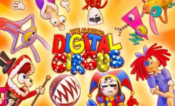

Video Hyperfixations
Anime, Youtube, Cartoons; I love them all. Here, I plan to not only explain, but show you some of my favorite of the weird stuff that makes my brain happy.
Anime
Although I don't watch it as often as I used to, I still love anime. Recently, I've even gotten my mom into watching anime. I prefer animation over live action shows in genreal because of how limitless the possibilites can be.
Cartoons
As I've already stated, I love animation. The difference between why I love anime and cartoons is that cartoons are just silly and goofy compared to anime having a continuous story. Not to say that cartoons don't follow a story, just that cartoons are (usually) much more lighthearted.
Other Media
When I'm not watching actual shows, I usually just have YouTube or a Twitch stream playing on my laptop. They're a really nice thing to listen to when you just need something in the background while you work. Tuning in and actually watching is only something I do every now and then, but when I do it never misses.